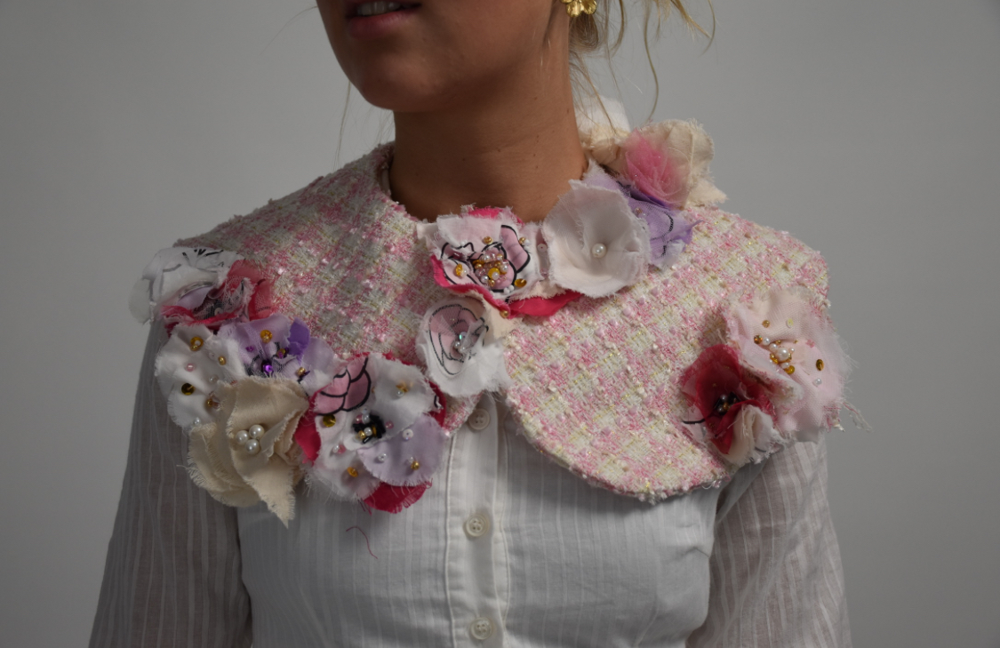

I study a Bachelor of Business/Design at the University of NSW
As part of the business school, I study marketing analytics which is a mix of business analytics and marketing. I learn about processing marketing data and gaining insights to evaluate business performance. I have just started this major but am enjoying it.


Through the design aspect of my degree, I study fashion design at UNSW. These classes are very skill based but assist students in learning industry techniques. Below are some of the projects I have made!

This is a removable shirt collar I made last year inspired by floral elements of Chanel

This is a collared white longsleeve cotton shirt I made last semester
I study a variety of fibres, yarns and fabrics through textiles design which is my 2nd design major.
Last semester I made a collection of 3 scarves in Textiles design:


Video I made about my textiles scarves: